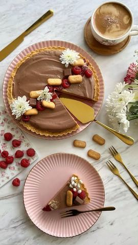

Moja beleška
Sačuvano
Ocena
Sastojci
- Podloga
- Malina sos
- Čokoladni fil
Priprema
Sastojci za podlogu se umešaju i rasporede po dnu i ivicama kalupa dimenzija 28cm, Maline se prokrčkaju sa malčice vode i šećera, pa sklonite šerpicu sa vatre i umešate želatin koji ste rastvorili sa 30ml hlade vode i pustili da odradi svoj proces. Kada se sos malko prohladi prelijte ga preko podloge pa ostavite u frižideru kako bi se učvrstio. Preko čokolade koju ste usitniti prelijte slatku pavlaku koju ste ugrejali do vrenja, sačekajte minut, dva i umešajte lepo. U prohlađen ganaš dodajte vajkrem i lagano ga sjedinite spatulom. Prelijte preko malina sosa, pa ostavite da se malo prohladi, a potom uživajte u savršeno kremastim zalogajima 😍😍😍
Originalni opis sa Instagrama
Plazma & malina tart 😍 Obožavam ove brzinske, poslastice bez pečenja, predivnog ukusa ali i tako finog izgleda 🥰🥰🥰 Ovaj tart je upravo jedan od njih, pa izvolite, da se osladite 🥰🥰🥰 Sastojci: Podloga: •300 gr Mlevene Plazme •100 gr otopljenog putera •100 ml soka ceđene 🍊 •3 kašike šećera u prahu Malina sos: •300 gr zaleđenih malina •50 ml vode •60 gr kristal šećera •1 želatin (rastopljen u 30 ml hladne vode) Čokoladni fil: •300 gr mlečne čokolade •300 ml slatke pavlake •200 gr vajkrema Sastojci za podlogu se umešaju i rasporede po dnu i ivicama kalupa dimenzija 28cm, Maline se prokrčkaju sa malčice vode i šećera, pa sklonite šerpicu sa vatre i umešate želatin koji ste rastvorili sa 30ml hlade vode i pustili da odradi svoj proces. Kada se sos malko prohladi prelijte ga preko podloge pa ostavite u frižideru kako bi se učvrstio. Preko čokolade koju ste usitniti prelijte slatku pavlaku koju ste ugrejali do vrenja, sačekajte minut, dva i umešajte lepo. U prohlađen ganaš dodajte vajkrem i lagano ga sjedinite spatulom. Prelijte preko malina sosa, pa ostavite da se malo prohladi, a potom uživajte u savršeno kremastim zalogajima 😍😍😍 • • • #tart #plazma #mlevenaplazma #malinatart #cokoladnitart #idejezadezert #ukusnahrana #proverenirecepti #brzoilako #slatkisi #slatkirecepti